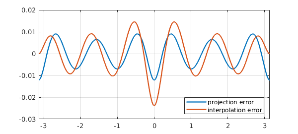
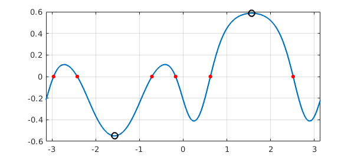
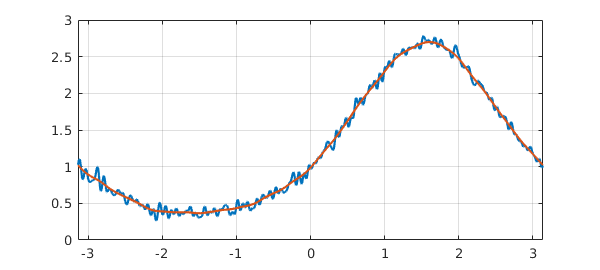
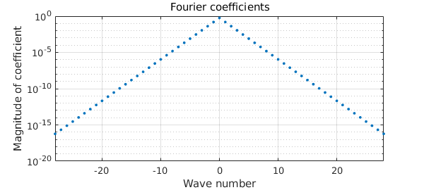
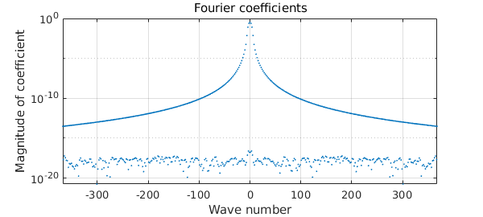
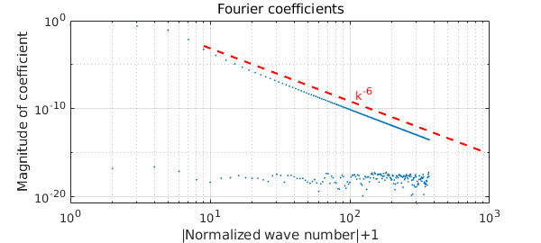

11.1 Introduction
One of the major new features introduced in Chebfun version 5 was the ability to use trigonometric functions instead of polynomials for representing smooth periodic functions [Wright et al. 2015]. These trig-based chebfuns, or "trigfuns", can be created with the use of the 'trig' (or 'periodic') flag in the Chebfun constructor. For example, the function $f(t) = \tanh(3\sin t)-\sin(t+1/2)$ on $[-\pi,\pi]$ can be constructed and plotted as follows:
f = chebfun(@(t) tanh(3*sin(t))-sin(t+1/2),[-pi pi],'trig') plot(f), grid on
f =
chebfun column (1 smooth piece)
interval length endpoint values trig
[ -3.1, 3.1] 147 0.48 0.48
vertical scale = 0.92

The text 'trig' in the display indicates that $f$ is represented by trigonometric functions, as discussed in the next section. For now we note that the length of 131 means that $f$ is resolved to machine precision using a trigonometric interpolant through 131 equally spaced samples over $[-\pi,\pi)$, or equivalently, 65 trigonometric (= Fourier) modes.
In this chapter we review some of the functionality for trigfuns as well as some theory of trigonometric interpolation. For brevity, we refer to trigonometric-based chebfuns as trigfuns and polynomial-based chebfuns as chebfuns.
Throughout our discussion, the trigfuns we construct live on the interval $[-\pi,\pi]$, which we specify explicitly in each call to the constructor. Mathematically, it might have made sense for this to be the default domain for trigfuns, but in Chebfun the factory default is always $[-1,1]$, whether the representation is trigonometric or not. It is possible to change the default domain to $[-\pi,\pi]$, and indeed to change the default function representation to trigonometric; see Section 8.2. To avoid confusion, however, we have not changed any defaults in this chapter.
For examples of Chebfun solution of periodic ODEs, see Chapter 7 and also Chapter 15 of [Trefethen, Birkisson & Driscoll 2018].
(Editors' note. Periodic chebfuns were created by Grady Wright of Boise State University during a visit to Oxford in 2014. Another MATLAB project based on trigonometric interpolants, called Fourfun, was developed independently by Kristyn McLeod under the supervision of Rodrigo Platte [McLeod 2014].)
11.2 Trigonometric series and interpolants
The classical trigonometric series of a periodic function $u$ defined on $[-\pi,\pi]$ is given as $$ \mathcal{F}[u] = \sum_{k=-\infty}^{\infty} a_k e^{ikt} $$ with coefficients $$ a_k = \frac{1}{2\pi} \int_{-\pi}^{\pi} u(t)e^{-ikt} dt. $$ Alternatively, we can express the series in terms of sines and cosines, $$ \mathcal{F}[u] = \sum_{k=0}^{\infty} a_k \cos(k t) + \sum_{k=1}^{\infty} b_k \sin(k t) $$ with $$ a_k = \frac{1}{\pi} \int_{-\pi}^{\pi} f(t)\cos(kt) dt, \quad b_k = \frac{1}{\pi} \int_{-\pi}^{\pi} f(t)\sin(kt) dt, $$ for $k>0$ and $$ a_0 = \frac{1}{2\pi} \int_{-\pi}^{\pi} f(t) dt. $$ In what follows we will use the complex exponential form of the series.
Note that the first of these series is often referred to as the Fourier series of $u$, but we will use the term trigonometric series as advocated by Zygmund [Zygmund, 1959]. Similar expressions for the series and coefficients hold for intervals other than $[-\pi,\pi]$ by shifting and scaling appropriately.
Approximation theory results for trigonometric series are classic and can be found in, for example, [Zygmund, 1959]. Here we review some of these properties.
The convergence of the trigonometric series depends on the smoothness of $u$ on $[-\pi,\pi]$ and its periodic extension. Let $q_N$ be the truncated series $$ q_N(t) = \sum_{k=-(N-1)/2}^{(N-1)/2} a_k e^{ikt} $$ when $N$ is odd and $$ q_N(t) = \sum_{k=-N/2}^{N/2} a_k e^{ikt} $$ when $N$ is even. If $u$ is periodic, continuous, and of bounded variation on $[-\pi,\pi]$, then as $N\rightarrow \infty$, $$ | u - q_N | \rightarrow 0, $$ where $|\cdot|$ is the maximum norm. From our first series formula it is clear that the error is bounded by $$ | u - q_N | \leq \sum_{|k| > \lfloor N/2 \rfloor} |a_k|. $$ The decay rate of the coefficients $a_k$ depends on the smoothness of $u$ and can be estimated by integration by parts. A classical result says that if $u$ is $(\ell-1)$-times continuously differentiable on $[-\pi,\pi]$, with each of these derivatives being periodic, and the derivative of order $\ell$ is of bounded variation on $[-\pi,\pi]$, then $$ |a_k| = O(|k|^{-\ell-1}),\; k=\pm 1, \pm 2,\dots. $$ Adding up the tail, this gives us $$ | u - q_N | \leq O(N^{-\ell}) $$ as $N\to\infty$, assuming $\ell\ge 1$. If $u$ and its periodic extension are $C^{\infty}$, then $q_N$ converges to $u$ faster than any inverse power of $N$. If $u$ is analytic on $[-\pi,\pi]$ then the convergence rate is exponential, i.e., $| u - q_N | = O(b^N)$ for some $b < 1$.
In general the coefficients $a_k$ are not known exactly. Let us imagine that we use the trapezoidal quadrature formula to approximate them [Trefethen & Weideman 2014]. Defining the trigonometric points by $$ t_j = -\pi + 2\pi j/N, \qquad j=0,\ldots,N-1 $$ (Chebfun: trigpts(N,[-pi,pi])) gives the approximation $$ a_k \approx c_k := \frac{1}{N} \sum_{j=0}^{N-1} u(t_j) e^{-i k t_j}. $$ The coefficients $c_k$ are referred to as the discrete Fourier coefficients, and when they are replaced by $a_k$ in the truncated trigonometric series $q_N$, the resulting series is called the discrete Fourier series of $u$. The form of this series depends on the parity of $N$. For odd $N$ we have $$ p_N(t) = \sum_{k=-(N-1)/2}^{(N-1)/2} c_k e^{ikt}. $$ When $N$ is even we have $$ p_N(t) = \sum_{k=-N/2+1}^{N/2-1} c_k e^{ikt}\,+ c_{N/2} \cos(N/2 t), $$ which is often rewritten as $$ p_N(t) = {\sum_{k=-N/2}^{N/2}} {}' c_k e^{ikt}, $$ where $c_{-N/2} = c_{N/2}$ and the prime means the first and last terms in the sum are halved. The reason the $\sin(N/2 t)$ term is missing is that this function vanishes when evaluated at $t_j$, so that there is no contribution of this mode to the coefficient $c_{N/2}$.
The degree of a trigonometric sum is the degree of its highest order term. Thus our sums above for odd $N$ are of degree $(N-1)/2$, and those for even $N$ are of degree $N/2$.
The discrete Fourier series $p_N$ has the property that it interpolates $u$ at the gridpoints $t_j$. The coefficients $c_k$ can be computed in $O(N\log N)$ operations with the fast Fourier transform [Van Loan 1992], and the computation is numerically stable [Henrici 1986]. The approximation properties of the interpolants are very similar to those of the truncated trigonometric series approximation of a function $u$; see e.g. [Canuto et al. 2006/7], [Hesthaven et al. 2007], [Trefethen 2000]. Analysis of this relationship relies on the Poisson summation formula (or aliasing formula), which relates the interpolation coefficients $c_k$ to the trigonometric series coefficients $a_k$: $$ c_k = a_k + \sum_{m=1}^{\infty} \left(a_{k+m N} + a_{k-m N}\right). $$ This formula implies that if $\ell\ge 1$, the decay rate of $c_k$ is essentially the same as that of $a_k$, with $c_k\to a_k$ as $N\to\infty$.
To illustrate some of these ideas numerically, consider $u(t) = |\sin t|^3$, a function with $\ell = 3$.
uu = @(t) abs(sin(t))^3; u = chebfun(uu,[-pi,pi],'trig');
We can construct the truncated trigonometric series approximation with $N=11$ using the "trunc" option:
q11 = chebfun(uu,[-pi,pi],'trunc',11,'trig');
For comparison, here is the 11-point trigonometric interpolant:
p11 = chebfun(uu,[-pi,pi],11,'trig');
The error curves for the two approximations are similar:
plot([q11-u p11-u]), grid on
legend('projection error','interpolation error','location','southeast')

The difference between truncation of a trigonometric series and trigonometric interpolation, while interesting mathematically, is rarely very important in practical computation.
11.3 Basic operations
Most computations with trigfuns follow the same pattern as with chebfuns. Typically the result will be a trigfun too. Here for example we construct an initial trigfun $g$ and then transform it to a new trigfun $f$.
g = chebfun(@(t) sin(t),[-pi pi],'trig'); f = tanh(cos(1+2*g)^2) +g/3 - 0.5
f =
chebfun column (1 smooth piece)
interval length endpoint values trig
[ -3.1, 3.1] 159 -0.22 -0.22
vertical scale = 0.59
The operations $+$, $*$, and so on are all carried out by appropriate manipulation of trigonometric representations. Here we compute and plot the maximum, minimum, and roots of $f$:
[maxval, maxpos] = max(f); [minval, minpos] = min(f); r = roots(f); plot(f), grid on, hold on plot(r,f(r),'.r','markersize',14) plot(maxpos,maxval,'ok') plot(minpos,minval,'ok')

The derivative of a trigfun can be computed with diff, and the definite integral with sum:
sum(f)
ans = -0.074010812957415
Other operations should generally proceed as expected. Sometimes, if an operation breaks the smoothness needed for a trig representation, the result of a trigfun computation will be a chebfun. For example, the absolute value of the function above is a chebfun, not a trigfun:
g = abs(f); plot(g), grid on hold off

If you combine a trigfun and a chebfun, the result will be a chebfun.
11.4 Complex-valued functions and contour integrals
Like other chebfuns, trigfuns can take complex values, and this feature is especially useful for the computation of contour integrals over smooth contours in the complex plane, such as circles, as was highlighted in Section 5.3. We recommend trigfuns for the computation of most contour integrals.
A pretty example of a periodic complex-valued chebfun can be generated with the commands
cheb.gallerytrig('starburst')

11.5 Circular convolution
The circular or periodic convolution of two functions $f$ and $g$ with period $T$ is defined by $$ (f*g)(t) := \int_{t_0}^{t_0 + T} g(s)f(t-s)ds $$ where $t_0$ is arbitrary. Circular convolutions can be computed for trigfuns with the circconv function. For example, here is a trigonometric interpolant through $201$ samples of a smooth function plus noise (available via cheb.gallerytrig('noisyfun')):
rng('default'), rng(0);
n = 201;
tt = trigpts(n,[-pi pi]);
ff = exp(sin(tt)) + 0.05*randn(n,1);
f = chebfun(ff,[-pi pi],'trig')
plot(f), grid on
f =
chebfun column (1 smooth piece)
interval length endpoint values trig
[ -3.1, 3.1] 201 1 1
vertical scale = 2.8
The high frequencies can be smoothed by convolving $f$ with a mollifier such as a Gaussian.
gaussian = @(t,sigma) 1/(sigma*sqrt(2*pi))*exp(-0.5*(t/sigma)^2); g = @(sigma) chebfun(@(t) gaussian(t,sigma),[-pi pi],'trig');
This function is numerically periodic for $\sigma\le 0.35$. Here we take $\sigma = 0.1$ and superimpose the smoothed curve on top of the noisy one:
h = circconv(f,g(0.1)); hold on, plot(h), hold off

11.6 Trigfuns vs. chebfuns
Trigonometric interpolants have a resolution power of 2 points per wavelength, whereas Chebyshev interpolants require approximately $\pi$ points per wavelength (averaged over the grid). This means that smooth periodic functions can usually be represented as trigfuns using fewer samples than standard chebfuns.
To illustrate this, consider the chebfun and trigfun representations of $f(t) = \cos(11\sin(3(t-1/\pi)))$ over $[-\pi,\pi]$:
ff = @(t) cos(11*sin(3*(t-1/pi))); f_cheb = chebfun(ff,[-pi pi]); f_trig = chebfun(ff,[-pi pi], 'trig');
The ratio of lengths of the two representations should be approximately $\pi/2$, and this is indeed what we find:
ratio = length(f_cheb)/length(f_trig)
ratio = 1.600000000000000
Another advantage of trigonometric representations appears in the computation of derivatives. For example, consider the function $\cos(10\sin t)$,
f = chebfun(@(t) cos(10*sin(t)),[-pi pi],'trig');
All odd derivatives of $f$ vanish at $\pm \pi$. Here is what the trigfun finds for $f'''(\pi)$:
df3 = diff(f,3); df3(pi)
ans =
-1.273632671113180e-12
This is essentially full precision since the scale of $f'''$ is about $1000$. By contrast, we lose six digits of accuracy if we use a non-trigonometric chebfun:
f_cheb = chebfun(@(t) cos(10*sin(t)),[-pi pi]); df3_cheb = diff(f_cheb,3); df3_cheb(pi)
ans =
2.570928010630634e-06
Trying to construct a trigfun from a function that is not smoothly periodic will typically result in a warning, as illustrated by this result for $t^2$:
f = chebfun(@(t) t^2,[-pi pi],'trig')
Warning: Function not resolved using 65536 pts. Have you tried a non-trig
representation?
f =
chebfun column (1 smooth piece)
interval length endpoint values trig
[ -3.1, 3.1] 65536 9.9 9.9
vertical scale = 9.9
In such a case one should usually switch to a non-trigonometric representation.
11.7 Trigonometric coefficients
Trigfuns provide an easy tool for computing Fourier coefficients via the command trigcoeffs. (See the end of this section for an important fine point concerning $[-\pi,\pi]$ vs. $[0,2\pi]$.) Here as an example is $u(t) = 1 - 4\cos t + 6\sin(2t)$:
u = chebfun(@(t) 1-4*cos(t)+6*sin(2*t),[-pi pi],'trig'); trigcoeffs(u)
ans = 0.000000000000000 + 3.000000000000001i -2.000000000000000 + 0.000000000000000i 1.000000000000000 + 0.000000000000000i -2.000000000000000 - 0.000000000000000i 0.000000000000000 - 3.000000000000001i
Note that in this default mode, trigcoeffs returns the coefficients in complex exponential form, from lowest degree to highest. The equivalent coefficients in terms of cosines and sines can be obtained by specifying two output arguments:
[a,b] = trigcoeffs(u);
The first output variable contains the coefficients of $1, \cos t, \cos 2t, \dots$:
a
a = 1.000000000000000 -4.000000000000000 0.000000000000000
The second contains the coefficients of $\sin t, \sin 2t, \dots$:
b
b = 0.000000000000001 6.000000000000002
Coefficients of trigfuns (their absolute values) can be plotted with plotcoeffs. For the entire function $\exp(\sin t)$ (i.e., analytic throughout the complex plane), the coefficients decrease faster than geometrically:
f = chebfun('exp(sin(t))',[-pi pi],'trig');
plotcoeffs(f)
For $f(t) = 1/(2-\cos t)$, which is analytic on $[-\pi,\pi]$ but not entire, the decrease is perfectly geometric:
f = chebfun('1/(2-cos(t))',[-pi pi],'trig');
plotcoeffs(f)

A function with a finite number of derivatives gives algebraic decay:
f = chebfun('abs(sin(x))^5',[-pi pi],'trig');
plotcoeffs(f)

The loglog option enables one more easily to quantify the decay rate (showing the coefficients of index $k>0$). This function has $\ell =5$ for the estimates above, which imply that the decay rate of coefficients is $a_k = O(|k|^{-6})$.
plotcoeffs(f,'loglog')
hold on, loglog(3*[3 300],[3 300].^-6,'--r'), hold off
text(110,4e-9,'k^{-6}','color','r')

At the beginning of this section, we alluded to an important fine point concerning $[-\pi,\pi]$ vs. $[0,2\pi]$ --- or more generally, the transplantation from one domain $[a,b]$ to another. We now explain this.
Consider, say, the function $f(x) = \cos x = (e^{ix}+e^{-ix})/2$. Obviously its Fourier coefficients in the exponential basis are $1/2, 0, 1/2$:
f = chebfun(@cos,[-pi,pi],'trig'); trigcoeffs(f)
ans = 0.500000000000000 0.000000000000000 0.500000000000000
Naturally we expect the same result on $[0,2\pi]$:
f = chebfun(@cos,[0,2*pi],'trig'); trigcoeffs(f)
ans = 0.500000000000000 - 0.000000000000000i -0.000000000000000 + 0.000000000000000i 0.500000000000000 + 0.000000000000000i
In fact, we expect these coefficients on any interval of length $2\pi$:
f = chebfun(@cos,[7,7+2*pi],'trig'); trigcoeffs(f)
ans = 0.500000000000000 - 0.000000000000000i 0.000000000000000 + 0.000000000000000i 0.500000000000000 + 0.000000000000000i
This all seems so natural that one can easily overlook that something of substance is going on. To work on an interval like $[7,7+2\pi]$, Chebfun first transplants the problem to $[-\pi,\pi]$. The transplanted function is not $\cos x$ at all --- it is $\cos(x+8)$. Now $\cos(x+8)$ has a perfectly good Fourier expansion, but the last thing a user would expect trigcoeffs to return would be those coefficients. We can say it precisely like this: the coefficients returned by trigcoeffs for expansion on any interval $[a,b]$ correspond to the basis ${\exp(i\alpha k x)}$ with $\alpha = 2\pi/(b-a)$, not to the basis ${\exp(i\alpha k (x- (b+a)/2))}$.
Note that this is a point where the analogy between trigfuns and chebfuns breaks down. If you call chebcoeffs(f) for a chebfun on $[a,b]$, the resulting coefficients correspond to expansion in Chebyshev polynomials of the transplant of $f$. If you call trigcoeffs(f) for a trigfun on $[a,b]$, the resulting coefficients correspond to expansion in complex exponentials that are not transplanted to $[-\pi,\pi]$. If you truly want the latter coefficients, at the time of this writing you can get them with f.coeffs, though we are not sure if this may change in the future.
11.8 Truncated trigonometric series approximations
The trigcoeffs function can also be used to compute a prescribed number of trigonometric coefficients of a function that may not be smooth enough for resolution to machine precision; this is done by accurate numerical evaluation of the integral defining $a_k$. For example, here is a non-smooth function, a square wave, represented as a chebfun. Superimposed on the square wave is its approximation by a trigonometric sum of degree $15$:
sq_wave = @(t) sign(sin((t))); u = chebfun(sq_wave,[-pi pi],'splitting','on'); plot(u), grid on, ylim([-1.5 1.5]) degree = 15; a = trigcoeffs(u,2*degree+1); u_trunc = chebfun(a,[-pi pi],'trig','coeffs'); hold on, plot(u_trunc), hold off
This represents the best degree 15 trigonometric approximation to the square wave over $[-\pi,\pi]$ in the $L^2$ sense. The oscillations show the famous Gibbs phenomenon.
11.9 References
[Austin, Kravanja & Trefethen 2014] A. P. Austin, P. Kravanja and L. N. Trefethen, "Numerical algorithms based on analytic function values at roots of unity", SIAM J. Numer. Anal. 52 (2014), 1795--1821.
[Canuto et al. 2006/7] C. Canuto, M. Y. Hussaini, A. Quarteroni and T. A. Zang, Spectral Methods, 2 vols., Springer, 2006 and 2007.
[Henrici 1986] P. Henrici, Applied and Computational Complex Analysis, vol. 3, Wiley, 1986.
[Hesthaven et al. 2007] J. S. Hesthaven, S. Gottlieb, and D. Gottlieb, Spectral Methods for Time-Dependent Problems, Cambridge U. Press, 2007.
[McLeod 2014] K. McLeod, "Fourfun: A new system for automatic computations using Fourier expansions", submitted, 2014. See also http://uk.mathworks.com/matlabcentral/fileexchange/46999-fourfun.
[Trefethen 2000] L. N. Trefethen, Spectral Methods in MATLAB, SIAM, 2000.
[Trefethen, Birkisson & Driscoll 2018] L. N. Trefethen, A. Birkisson, and T. A. Driscoll, Exploring ODEs, SIAM, 2018; freely available at http://people.maths.ox.ac.uk/trefethen/ExplODE/.
[Trefethen & Weideman 2014] L. N. Trefethen and J. A. C. Weideman, "The exponentially convergent trapezoidal rule", SIAM Review 56 (2014), 385-458.
[Van Loan 1992] C. Van Loan, Computational Frameworks for the Fast Fourier Transform, SIAM, 1992.
[Wright et al. 2015] G. B. Wright, M. Javed, H. Montanelli, and L. N. Trefethen, Extension of Chebfun to periodic functions, SIAM J. Sci. Comp. 37 (2015), C554--C573.
[Zygmund 1959] A. Zygmund, Trigonometric Series, Cambridge U. Press, 1959.